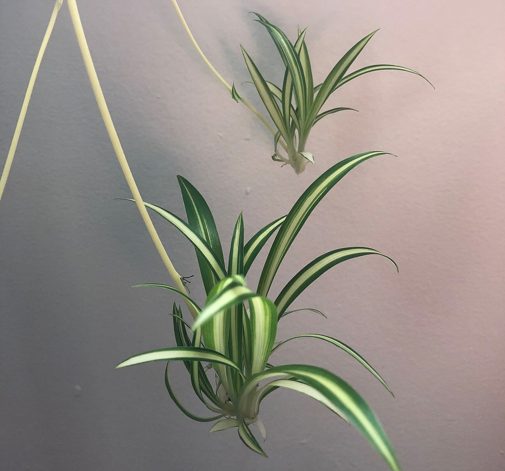
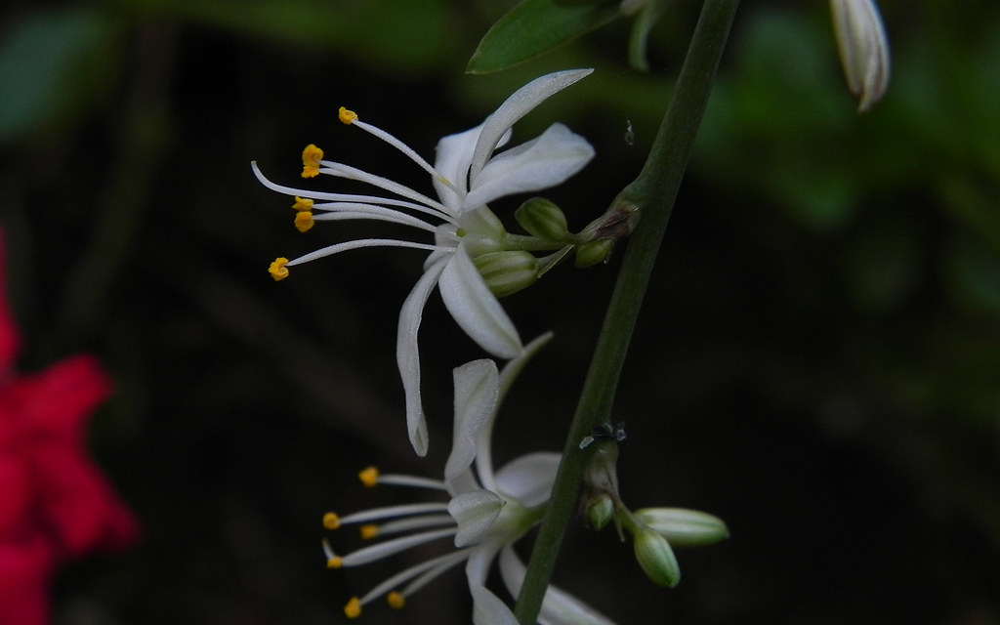
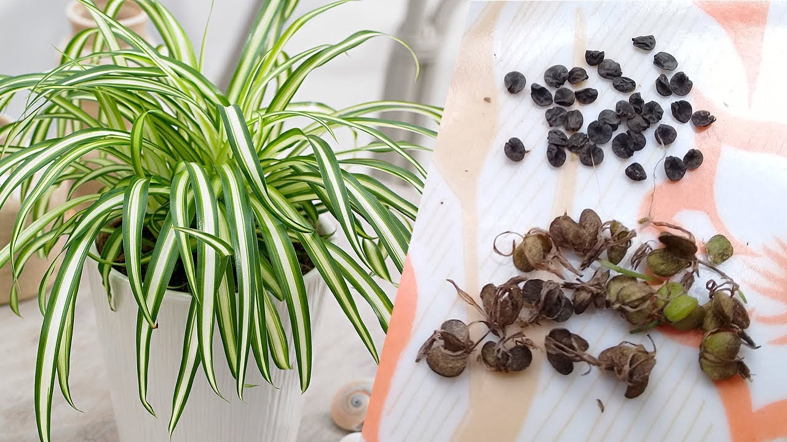
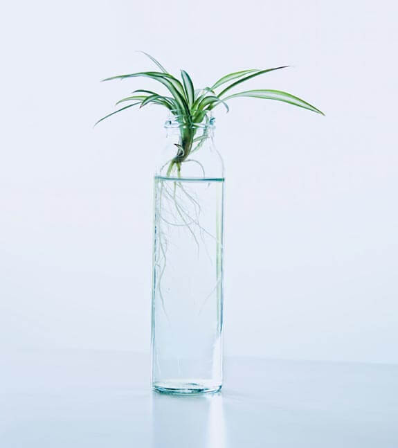

Growth of a Spider Plant
- Though they will stop growing outwards once they have reached a diamiter of 3 feet, they should not be grown in the same container as other plants as they will are quite invasive and will choke out any threatening roots.
Propagation
In addition to leaves, spider plants will grow pale stalkes with spiderettes:

Flowers in late summer:

And seed pods in the fall:

Seeds should be planted soon after removal from seed pod under 1/8 inch of dirt. Spiderettes can be placed with the place where the leaves meet or the node, submerged in filtered water. Spiderettes will begin to grow roots (below) and should be planted in dirt once the roots are a few inches long.
